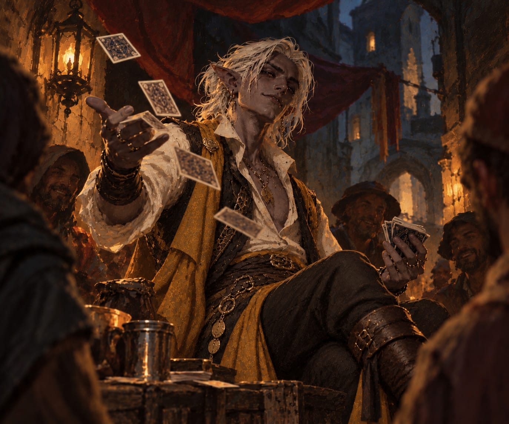

Vaelis
Duskryn
Charm worn like armor. Grief hidden behind a silver tongue.
“We will always be with you, Vaelis. Even when you cannot see us.”— Elena
Level Features
Abilities & Skills
Resources
Weapons & Attacks
Tap to rollRazor Cards: magical, finesse, light, thrown (20/60). Melee attacks have Disadvantage. Thrown cards vanish and the deck replenishes itself.
Proficiencies & Traits
- Saving Throws
- Skills
- Armor & Weapons
- Tools
- Languages
Drow Lineage
Survivor
Hypervigilance: reroll an Initiative d20 result of 9 or lower.
Steel Yourself: after failing a save against Charmed or Frightened, add proficiency bonus as a Reaction, once per Long Rest.
Spell Slots
Cantrips & Prepared Spells
Equipment
Everything Vaelis carries, owes, hides, or refuses to leave behind.
Coins
Enter a signed value to add or spendEnter a normal number to set the exact amount. Enter a signed value such as -5 to spend or +5 to add coins. If Silver goes below zero, the wallet automatically changes one Gold into ten Silver.
Items
Notes & Threads
Side stories, allies, enemies, clues, debts, and everything still unresolved.
The Last of Thirteen
Twelve sisters. Twelve voices. Twelve lessons that never left him.
College of Spirits · Level 3
Vaelis will channel the spirits through Bardic Inspiration. His playing cards become a Spiritual Focus, Guidance gains 60-foot range, and each Tale from Beyond takes the voice of one of his sisters. Isadora is the Librarian, replacing the fourth spirit's usual identity.